Suldrup
Grobkörniger, weißgrauer Granit mit schwarzen Streifen und roter Körnung
Höhe: 127 cm
Größte Breite: 132 cm
Größte Dicke: 26 cm
Runenhöhe: 11/11,5/13,5 cm
Runeninschrift :
{riuskR} errichtete (diesen Stein zum Gedenken an) Ufag, seinen Bruder

30 - Suldrup 2 (manchmal auch als Suldrup 1 bezeichnet) - Letztes Update 20.08.2025
Listennummer : DR 138 / DK NJy 55
| Navidaten: 56.85560 9.69093 oder: Dalumvej 30, 9541 Suldrup |
Transliteration: : riuskR : risþi : s(t)... ...R : ufah : bruþu|r : sin :
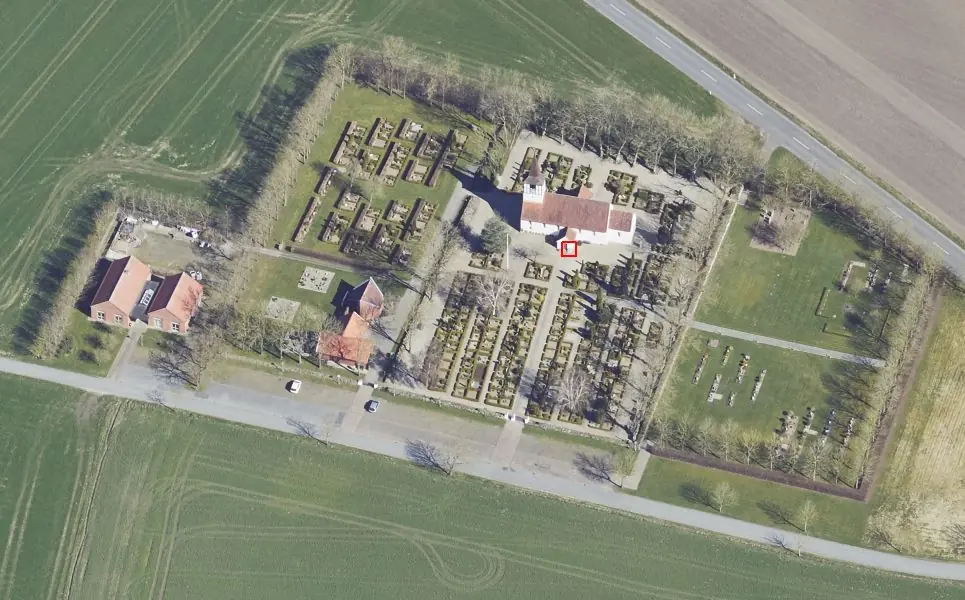
Dies ist ein Luftfoto vom 19.04.2023 von Skråfoto das die Kirche von Suldrup zeigt. Skråfoto ist eine Webanwendung, die von Klimadatastyrelsen weltweit kostenlos bereitgestellt wird - Freie Nutzung unter Beachtung der Lizenz: CC BY 4.0. Die Aufnahmen werden seit 2017 alle zwei Jahre erneuert und neben einer Senkrechtaufnahme wird ein Schrägbild aus jeder Himmelsrichtung angeboten, das man über eine Adresssuche aufrufen kann. Den Standort des Runensteins rechts vor der Kirche zum Waffenhaus habe ich rot umrandet.
Bislang hatte ich die Suldrup Kirche nur einmal am Dienstag, 02.08.1988, besucht. Bei der Gelegenheit hatte ich auch das Foto als Dia im linken Frame aufgenommen. Unglaublich, bald 35 Jahre her!
Im Rahmen meiner 2022er Jütland Wikingertour war ich am Donnerstag, 02.06.2022, vor Ort. Die außerhalb der Ortschaft n-w allein stehende Kirche war verschlossen, aber der Runenstein steht ja glücklicherweise davor und ist frei zugänglich. Diesmal habe ich diese digitalen Fotos angefertigt.
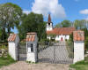 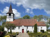 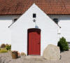 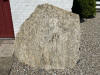 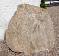 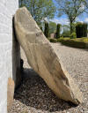 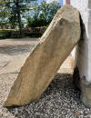 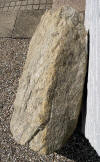


Während seiner Arbeit mit der Aufnahme und Aufstellung des mittelalterlichen Runensteins Suldrup 1 - siehe unten - entdeckte der Lehrer Nissen 1895 - laut Lis Jacobsen/Erik Moltke - Danmarks Runeindskrifter - 1942 - Sp. 176 - diesen bis dahin unbekannten Stein auf dem Kirchhof 10 Ellen von der südlichen und 4 Ellen von der westlichen Einfriedungsmauer. Er ließ ihn dann an der äußeren Mauer des Waffenhauses aufstellen. In einem Brief vom 24.06.1895 meldete er den Fund per Brief an das Nationalmuseum in Kopenhagen unter Beilage einer von ihm gefertigten Zeichnung. Dazu habe ich eine Anfrage am 01.11.2024 an das Antikvarisk-Topografisk Arkiv gerichtet. Die Antwort ließ erfreulicherweise - wie immer - nicht lange auf sich warten. Die dort verwahrten Unterlagen bekam ich heute - 04.11.2024 - von einem Mitarbeiter des Archivs - Tausend Dank Dánial - zugesandt, so dass ich sie hier präsentieren kann.
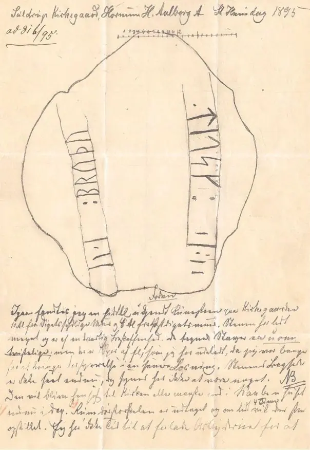
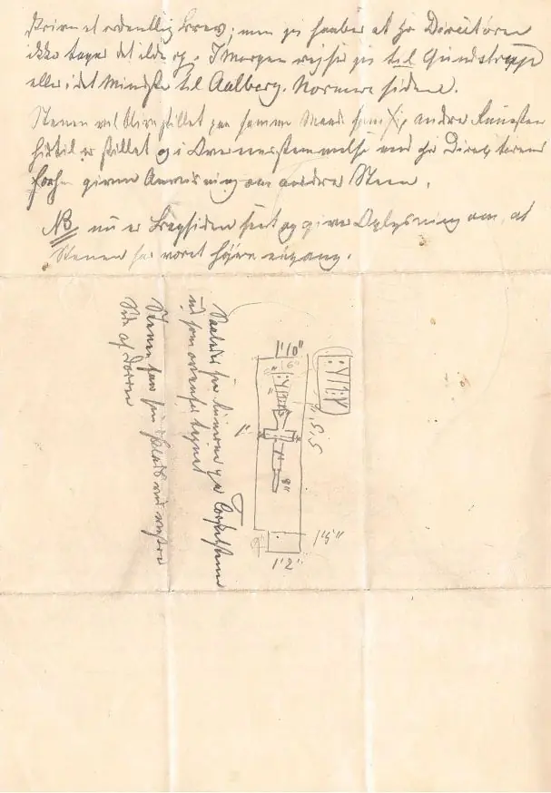
Bei der Person handelt es sich sicherlich um den geschichtsinteressierten Lehrer Jacob Wilken Nissen aus Randers (*02.10.1835 - im Geburtsregister eingetragen als Jacob Wilkesen Nissen - 29.10.1902, Lehrer in Ramten 1859 bis 1895 - link-LIVES),
 Bildquelle:
Det Kgl. Biblioteks billedsamling (von mir zugeschnitten)
- Lizenz:
Public Domain
Bildquelle:
Det Kgl. Biblioteks billedsamling (von mir zugeschnitten)
- Lizenz:
Public Domain
der auch schon bei den Runensteinen von Ydby/Flarup und von Rimsø in Erscheinung getreten ist.
Literaturhinweis zu seiner Person: Jacob Wilken Nissen - En sønderjydsk Folkemindesamler - von Wilken Jacobsen - Haderslev - in: Sønderjydsk Maanedsskrift, Nr. 1, 16. Jahrgang, 1. Juli 1939, S. 1-5
Heute steht der Runenstein unmittelbar rechts vom Eingang zum Waffenhaus. Er wird in die Zeit von 970 bis 1020 datiert.
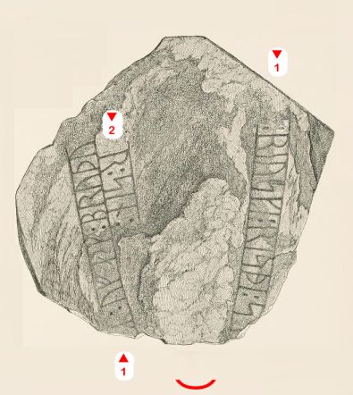
Es fehlt ein Teil des Steins / der Inschrift. Der Text auf dem Runenstein, der jetzt im Verhältnis zum ursprünglichen Layout verkehrt herum steht, wurde von der unteren linken Ecke (jetzt oben rechts) gelesen. Die 1. Zeile der Inschrift ist am oberen Rand des Steins, der heute nach unten zeigt, umlaufend und teilweise weggebrochen. Die Inschrift wird dann, wie oft zu sehen ist, mit einem zusätzlichen, kurzen Runenband von oben nach unten zu Ende gebracht.
Der Name des Steinerrichters riuskR wurde bislang nicht zufriedenstellend interpretiert, siehe Lis Jacobsen/Erik Moltke - Danmarks Runeindskrifter - 1942, Spalte 700 und Lena Peterson (*27.01.1939, schwedische Runologin), Nordiskt runnamnslexikon, 2007, S. 301. Das eher verbreitete Epitheton ÓfæigR bedeutet eigentlich derjenige, der für ein langes Leben bestimmt ist - Peterson - Nordiskt runnamnslexikon, 2007, S. 171/172. Die Form mit /á/ in ÓfágR geht auf eine frühe Entwicklung des gebräuchlichen nordischen Diphthongs /æi/ zurück - siehe Johannes Brøndum-Nielsen Gammeldansk Grammatik i sproghistorisk Fremstilling 1-8. 1 [2. udg. 1950]. København. 1928 [1950]-1971. § 104.1 s. 169 f.).
Aus dem Runenwerk von Prof. Ludv. F. A. Wimmer (*07.02.1839 - 29.04.1920, Philologe und Runenforscher - link-LIVES - Politiets registerblade - Bestattungsprotokoll),
 Bildquelle:
Fotografie zw. 1877-1900 von Fotograf Hansen & Weller
-
Det Kgl. Biblioteks billedsamling - Lizenz:
Public Domain
Bildquelle:
Fotografie zw. 1877-1900 von Fotograf Hansen & Weller
-
Det Kgl. Biblioteks billedsamling - Lizenz:
Public Domain
De danske runemindesmærker undersøgte og tolkede af Ludv. F. A. Wimmer - Andet Bind, Runestenene i Jylland og på øerne. 1899-1901 - Nr. 25, S. 146, habe ich diese Zeichnung von Prof. Julius Magnus Petersen (*04.09.1827 - 31.01.1917, Archäologischer Zeichner und Restaurator - link-LIVES - Bestattungsprotokoll)
 Bildquelle: Fotografie
von 1903 von Fotograf Marius Christensen
(*24.06.1874 -
25.06.1907) -
Det Kgl. Biblioteks billedsamling - Lizenz:
Public Domain
Bildquelle: Fotografie
von 1903 von Fotograf Marius Christensen
(*24.06.1874 -
25.06.1907) -
Det Kgl. Biblioteks billedsamling - Lizenz:
Public Domain
als Scan aus der in meinem Besitz befindlichen Ausgabe aufgenommen, die ich hier wiedergeben möchte. Wimmer hat den Runenstein persönlich vor Ort am 1.August 1896 untersucht und über seine Studien die Zeichnung noch etwas überarbeitet.
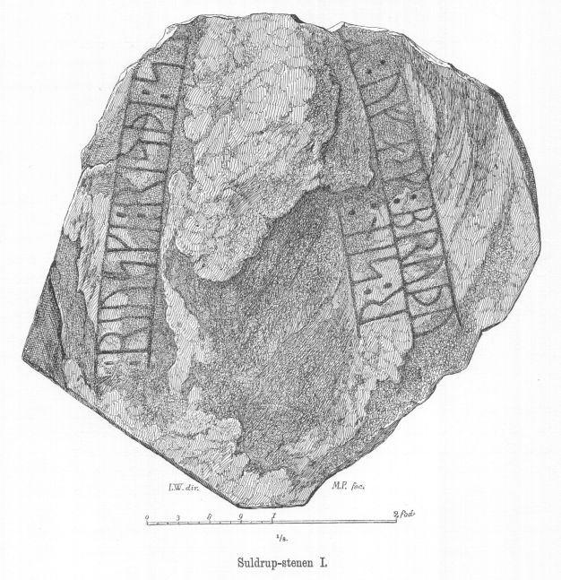
Ludv. F. A. Wimmer hat seine jahrelangen Aufzeichnungen der "Kgl. Bibliotek" in Kopenhagen überlassen. Ein Verzeichnis darüber wurde 1915 in Buchform herausgegeben - "Collectio runologica Wimmeriana: Fortegnelse over Ludv. F. A. Wimmers runologiske o. a. Samlinger i Det kgl. Bibliotek"
In seinen Unterlagen in der Königlichen Bibliothek befinden sich unter "III - Originaltegninger af de danske Runemindesmærker, udførte paa Undersøgelsesrejserne af Magn. Petersen og kontrollerede paa Stedet af Ludv. Wimmer, samt Prøvetryk af de paa Grundlag af de nævnte Tegninger, Aftryk o. s. v. til De danske Runemindesmærker" udførte Afbildninger med Wimmers Rettelser"


zu dem Runenstein von Suldrup 1 unter der Nr. 39 Aufzeichnungen von 1895, wobei ich am 27.09.2022 diese Zeichnung von Magnus Petersen - datiert auf den 03.07.1895 - fotografieren durfte.
Auf der Rückseite hat er diverse Informationen und Maßangaben zu dem Runenstein aufnotiert. Außerdem fand sich in der Schachtel diese Notiz von Carl Nicolai Henry Petersen (*20.03.1849 - 21.09.1896, dänischer Archäologe, 1879 im Nationalmuseum angestellt, ab 1892 als Leiter der Mittelalterabteilung - link-LIVES)

 Bildquelle:
Wikipedia - Lizenz:
Public Domain
Bildquelle:
Wikipedia - Lizenz:
Public Domainvom 25.06.1895 an Prof. Dr. Ludv. F. A. Wimmer.


Aus diesem Schreiben ging der entscheidende Hinweis zur Identität des Entdeckers "Lehrer Nissen" hervor, da Henry Petersen hier schreibt (übersetzt): "...Mitteilung von Lehrer Nissen aus Ramten der auf einer Runenstein Rundreise in Nordjütland war...". Dazu hat er auf der Rückseite (linke Hälfte) rechts unterhalb seiner Zeichnung vermerkt (übersetzt): "Fuß (nach Nissens Notiz)".
Durch Erik Moltke (*04.04.1901 - 19.10.1984, Runologe, Historiker - link-LIVES)
 Bildquelle: Scan von Buchumschlag "Runerne i Danmark og ders
oprindelse" - Erik Moltke - 1976 - Lizenz:
CC-BY-SA
Bildquelle: Scan von Buchumschlag "Runerne i Danmark og ders
oprindelse" - Erik Moltke - 1976 - Lizenz:
CC-BY-SA
wurde diese sw Fotografie am 18.05.1931 aufgenommen. Die Runen darauf wurden von ihm natürlich nachgezeichnet.
Quelle: Digitale Sammlung des Nationalmuseums in Kopenhagen - Lizenz: CC-BY-SA
Im Vorfeld zu dem 2016 erschienenen Buch von Lisbeth M. Imer (*1973, Runologin am Nationalmuseum Kopenhagen) "Danmarks Runesten - en fortælling" reiste sie mit dem Fotografen Roberto Fortuna zur Bestandsaufnahme durch die Lande. Das Foto des Runensteins wurde am 22.10.2012 aufgenommen.
Quelle: Digitale Sammlung des Nationalmuseums in Kopenhagen - Lizenz: CC-BY-SA
Den Eintrag zu diesem Runenstein aus der dänischen Runen Datenbank im Internet kann man hier abrufen.
Die Informationen in "Fund og Fortidsminder" zu dem Runenstein finden sich hier.
Über diesen Link finden sich zu dem Runenstein Informationen des Forschungsprojektes "Runes" der Akademie der Wissenschaften zu Göttingen.
Über die Webseite www.biopix-foto.de kann man ein Foto des Runensteins mit rot nachgezeichneten Runen anschauen.
Der Runenstein Suldrup 1 ist mittelalterlich. Er wird zum ersten Mal im Jahre 1880 erwähnt, als er zwischen Waffenhaus und Kirchenschiff der Suldrup Kirche im Boden lag. 1895 wurde er herausgenommen und im Waffenhaus der Kirche aufgestellt. Unterhalb der Inschrift, die unverständlich ist, schmückt den Stein ein Prozessionskreuz. Es handelt sich um ein gewöhnliches Exemplar eines romanischen, trapezförmigen Grabsteines.
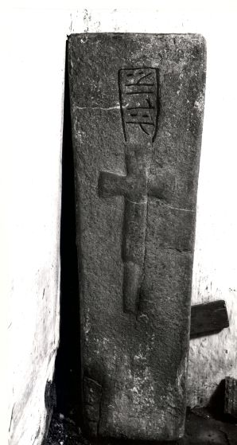
Quelle: Digitale Sammlung des Nationalmuseums in Kopenhagen - Lizenz: CC-BY-SA
Von Niels Nørgaard Nielsen, dem Leiter des Lokalhistorisk Arkiv for den tidligere Støvring Kommune, mit dem ich die Tage im Austausch zur Verifizierung der Person des "Lehrer Nissen" war, bekam ich am 27.12.2024 ein sw Foto der Kirche von Suldrup übermittelt, das von ihm datiert wird auf "nach 1895 und vor 1913". Der Runenstein steht nämlich schon auf seinem heutigen Standort. Siehe auch der zugehörige Artikel "Kirkegårde og gravminder gennem tiden" in der Infoschrift des Archivs "Hanen, Efteraarsnummer 2011, Nr. 73" ab der S. 9.
Im 19. Jahrhundert wurde an der Südseite des Kirchenschiffs eine schlichte Vorhalle - das Waffenhaus - errichtet, das keine dekorativen Elemente aufweist. 1944 erweiterte der Architekt E. Packness das Kirchenschiff nach Westen, wo ein neuer Eingang geschaffen wurde. Darüber wurde ein Turm errichtet, der teilweise aus großem Fachwerk mit Ständerwerk besteht. Vermutlich in spätgotischer Zeit wurde die Kirche bereits einmal nach Westen erweitert, wo vermutlich ein Turm stand, der später entfernt wurde. Danach muss der untere Teil des Turms, wenn die Annahme über den Zweck der Erweiterung als Turm zutrifft, zum Teil des Kirchenschiffes gemacht worden sein. Zu dem neuerlichen Turmbau, dessen Arbeiten am 07. August 1943 begannen, findet sich eine schön bebilderte Abhandlung mit allen relevanten Informationen. Im November 1944 war der Bau dann vollendet.

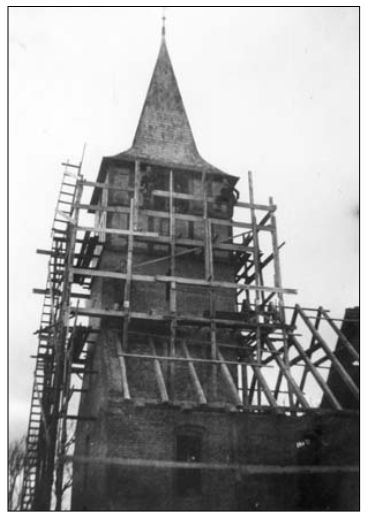
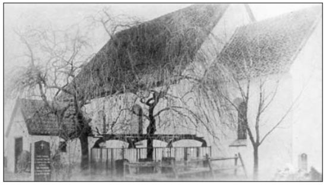
Suldrup Kirche um 1920Hinweis auf einen interessanten Artikel mit dem Titel "Hvem byggede Suldrup Kirke? (Wer erbaute die Suldrup Kirche)" - von 1999 von Poul Christensen - erschienen in Hanen 5. Rk. Nr. 8 1999.
Interessante Links mit etlichen historischen Fotografien zur Suldrup Kirche:
Aus Midthimmerlands Folkeblad Rebild - Folkebladet:
Aus arkiv.dk - Suchergebnis zum Begriff "Suldrup Kirke"
Suldrup Kirke 1988 - billedserie - Insgesamt 15 sw Aufnahmen aus dem Jahr 1988.
Kirche von Westen - Runenstein sichtbar - um 1940
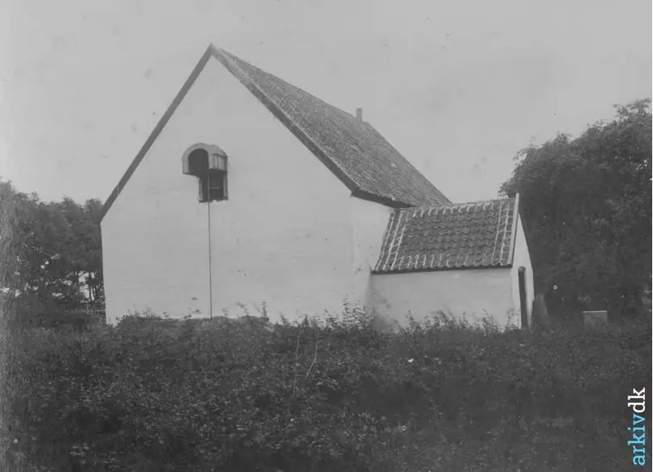
Suldrup Kirche 1942 von Süden - darauf sieht man den Runenstein frontal
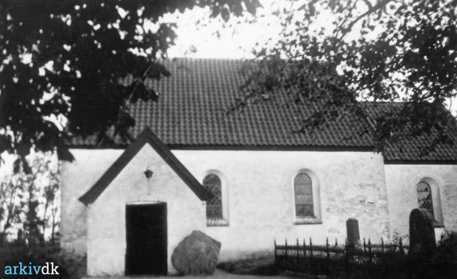
Renovierung des Turms der Suldrup Kirche 1987. Der Turm wurde 1943-1944 erbaut.
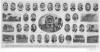

Mit Unterstützung des damaligen Dänischen Schulmuseums startete Svend Trøst Hansen (*14.09.1880 - 04.07.1939 - link-LIVES - Konfirmation 21.04.1895) 1917 ein Projekt, das alle Pfarreien in Dänemark dokumentieren sollte, sowohl in Bezug auf Kirchen als auch auf Schulen und die jeweiligen Mitarbeiter, damals und früher, mit dem Namen: Dänemarks Kirchen und Schulen. Deshalb schrieb der Vorstand des Museums einen Brief an die Priester und Lehrer in allen Pfarreien und gab zu verstehen, dass er ... ein solches Werk als von großem historischen Wert und äußerst wünschenswert erachtet und er es den Herrn Priestern und Lehrern in jedem Fall dringend empfehlen muss." Die Gemeinden waren darüber bei der Beschaffung der notwendigen Bilder von Menschen und Gebäuden hilfreich. Insgesamt gab es zur fraglichen Zeit in Dänemark ca. 2000 Kirchengemeinden, von denen über die Rückmeldungen wohl nur 856 sogenannte "Sognekort" erstellt werden konnten. Es sind fotografische Collagen - 18,5 x 37,5 cm - mit insgesamt 36.748 Personen als Medaillonsfoto von 2 x 3 cm und Gebäude. Inzwischen sind alle digitalisiert und erfreulicherweise mit toller Suchfunktion in eben jener Datenbank abrufbar. Ein Manko ist, dass es (meist) kein Datum für die Aufnahme der Bilder gibt. Die Daten umfassen den Abschnitt etwa ab Mitte der 1880er Jahre bis 1937.